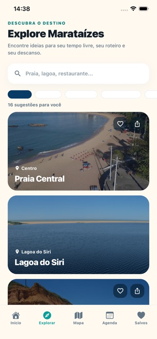
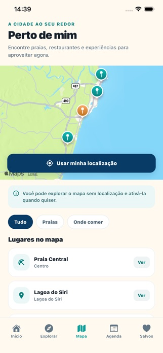
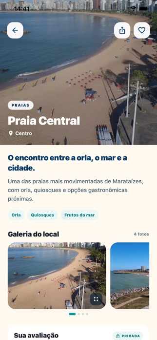

O app de turismo da Pérola Capixaba: praias, passeios, restaurantes, pousadas e a agenda da cidade. Funciona sem internet, até na beira do mar.
Baixar grátis na App StoreAndroid: em teste fechado no Google Play · quero testar


